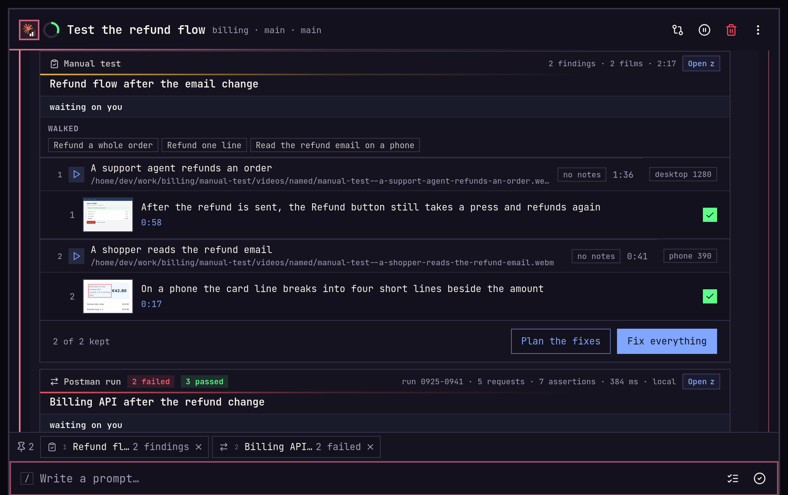
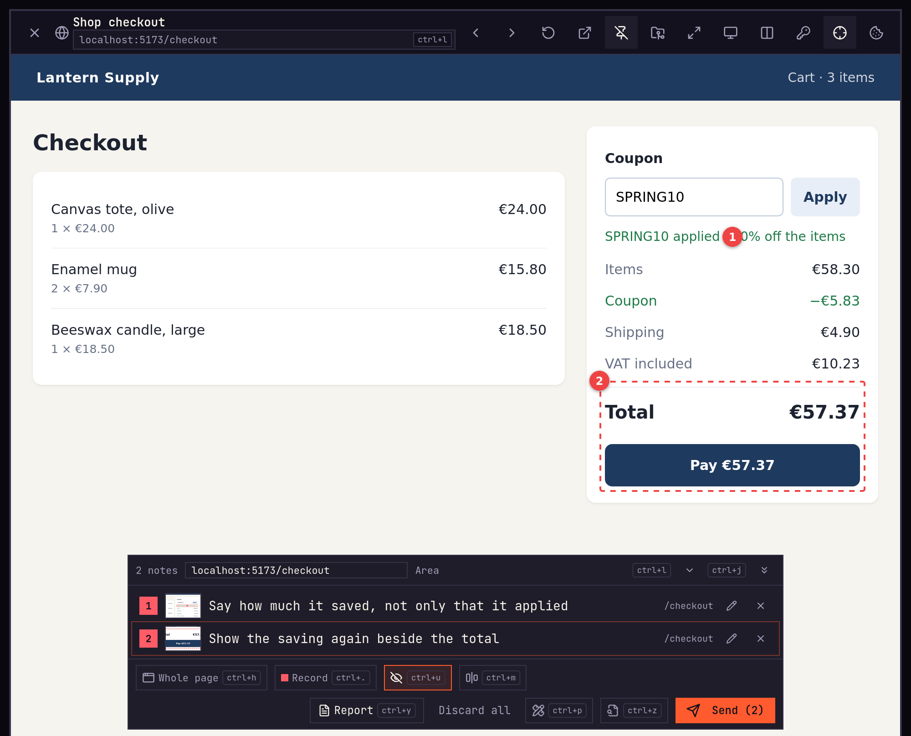
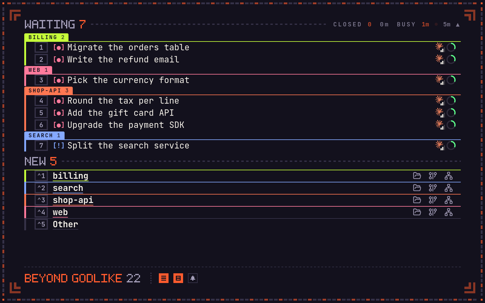
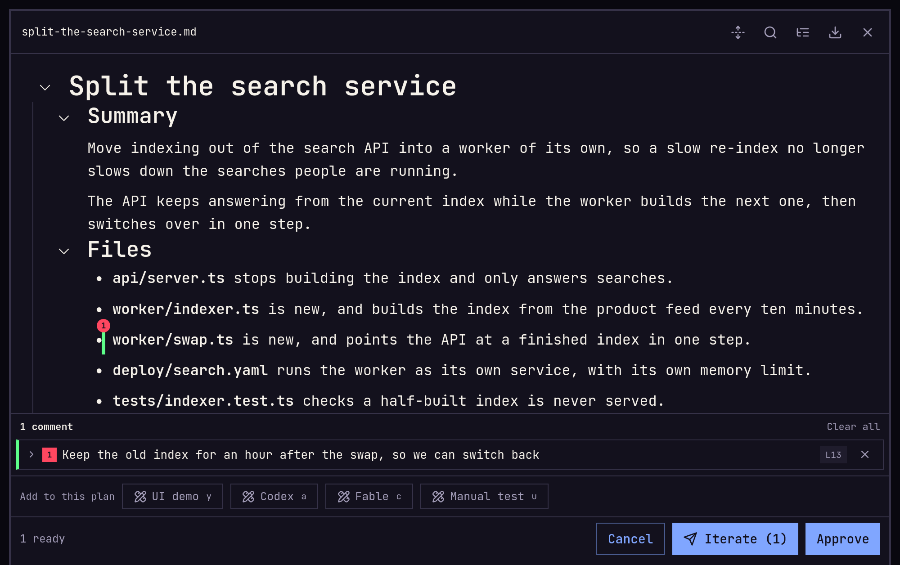
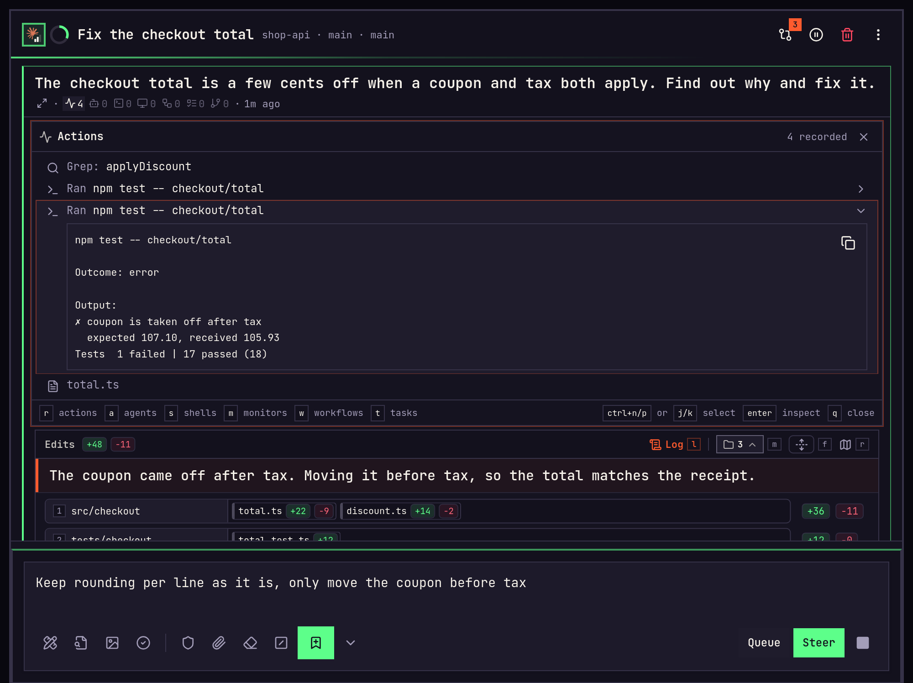
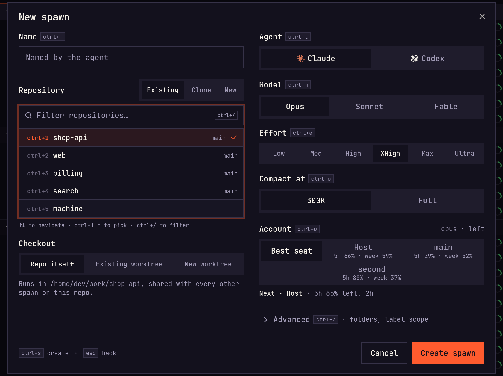
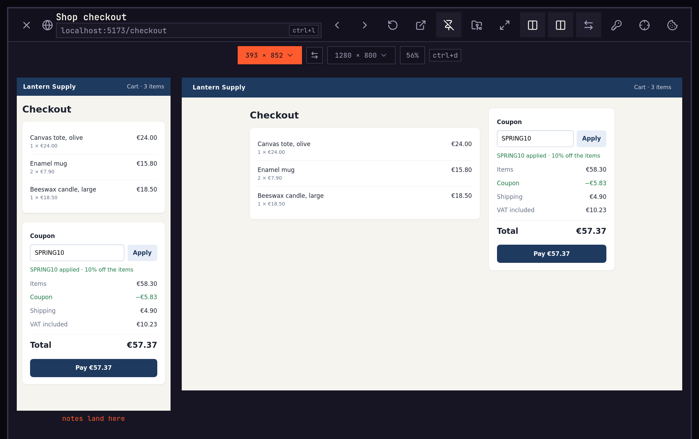
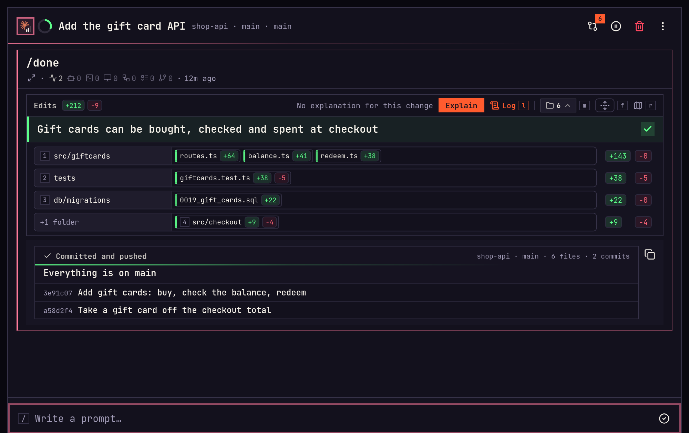

The rank
The list names how many spawns are at work, from to .
Spawn features
A spawn is one coding agent on one task in one repository. It runs on a machine you own, and you drive it from any screen. Working with agents, your own mind slips, so each part below names the trap it guards against. The most important come first.
Everything is remote
Nothing runs on the screen in your hand. The agents, their checkouts, terminals, browsers and test phones all live on your machine. Every screen you own opens onto it.
Your machine30 working
A long job tells your phone when it ends.
01Proof
Automation bias“It said it's done.”
When a spawn's turn ends, it hands back what it did, not a summary of it. Each piece arrives as a card in the feed. A manual test waits on you: plan the fixes, or have it fix everything.

02Feedback
Illusion of transparency“It knows what I mean.”
Turn on feedback mode and point at what is wrong: pick a part, draw a box, or write about the whole page. Send the notes to that spawn, to another one, or to a new one.

03Ultrafocus
Salience bias“I'll answer the one that just pinged.”
One key clears the screen down to the spawns that need you, each with a number that opens it. The rank of how many are at work sits at the foot, and a sound plays when another one starts waiting.

04Plan
Anchoring“Its first idea is good enough.”
Ask for a plan first, and the spawn writes one before it touches a file. Comment on any line and iterate to send it back, or approve it and the work starts.

05Watch
Optimism bias“It's probably going fine.”
The feed shows each command, test run and file edit as it happens, and the list shows what every spawn is doing. Type while it works, and the word reaches the turn already running.

06Start
Sunk cost“It has come this far.”
Say what needs doing and pick the repository. Choose Claude Code or Codex, the model, the effort and the account it runs on, from the keyboard. It works in your checkout or in a worktree of its own, and part way through you can hand the work to the other agent.

07Look
Illusion of validity“The code looks right.”
Open the page it built inside imba, at a phone's size and a computer's side by side. The agent can drive a browser of its own while you watch, and you can take the wheel at any moment.

08Review
Information overload“Four hundred lines. I'll skim it.”
When a turn ends, the spawn waits with an overview: the goal with a tick or a cross, and the folders it changed, the files other code stands on first with their share. Open a folder for its files and a file for its diff. The Map traces who calls the change, and Done commits it and pushes it.

Running many
The list names how many spawns are at work, from to .
Confirmation bias“It says the tests pass.”
A builder and a checker, round after round, until the work is proven.
New loop
A run graph of helper spawns, approved before any of them start.
New orchestration
Fetch, pull, push and commit the repository from the keyboard.
Commit graph
A terminal in the spawn's own folder, pinned beside the chat.
Shells
Mark a spawn, and it stays on the Out of Office screen while you are away.
Watch while away
Without you
Private alpha
imba is not released. It changes most days, and parts of it still break. A few people run it now on real work and say what went wrong.
hristo.hristov@theoremus.com